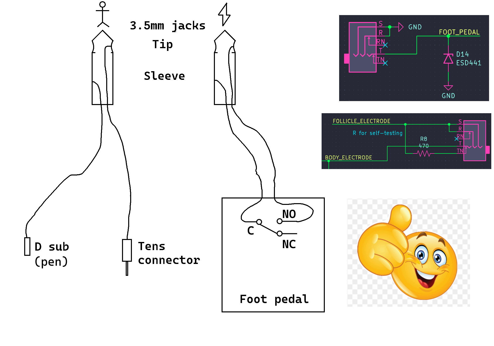

imzoe.me blog projects shop
DIY Electrolysis - Assembly
Components
There are several parts you need to source yourself. These are as follows:
- 2x 6mmX6mmX4.3mm SMD push button
- EC11 Rotary Encoder (15mm Plum Handle)
- SPDT slide switch
- Buzzer
- 4x M3 14-18mm countersunk screws
- Tens pad
- Tens cable (with the pin connector - the other end doesn't matter)
- 0.96in SSD1306 OLED (colour doesn't matter)
- 2 pole 3.5mm jack
- Foot pedal
- Enough wire for the foot pedal and stylus (I used about 3m total for the foot pedal and 2m total for the stylus)
- D-Sub Female Contacts (24-20 AWG, loose and not in a connector)
- F4/F4S electrolysis needles
- 3.7V 350mAh 1S LiPo battery
The D-subs can be annoying to get. I got some Harting ones from eBay, but other electronics retailers like CPC, Farnell, DigiKey, and Mouser should stock them. They vary in shape but should all work as long as they are the individual contact and not a whole connector.
The needles themselves are consumables and can be expensive. Both Ballet and Sterex will work, as long as they have an F4 shank.
Soldering the PCB
Place the OLED, rotary encoder, push buttons, slide switch, and battery on the PCB in their spots as designated by the silkscreen and solder them in place. All components solder to the top side, except for the battery (red wire is positive, black is negative).
If you've never soldered before, watch some YouTube tutorials and practice a bit on some old scrap.
Soldering the pedal and stylus
A diagram is easier to follow than my yap here.

The D-sub should be soldered to the tip of a 3.5mm jack with approx. 1m of wire. The TENS connector should be soldered to the sleeve of the same 3.5mm jack.
The normally open (NO) terminal of the foot pedal switch should be soldered to the tip of the other 3.5mm jack with approx. 1.5m of wire, and the common (C) terminal to the sleeve of the same jack with the same amount of wire.
3D Printing
All the 3D models can be found in the Github repo.
The case, knob, and stylus all need to be 3D printed. Print in the default orientation. PLA is fine for this.
The assembled PCB can be slid into the case and then closed with the screws. Slide the knob onto the rotary encoder.
Put the soldered D-sub with wire into one half of the printed stylus and glue it in place. Wait for the glue to cure before gluing the other half of the stylus. Once the stylus is assembled, you can put a needle in.
Firmware
Pre-compiled release firmware is in the Github releases page. You can also download the source and compile it yourself from scd31's Gitlab repo.
The firmware can be flashed to the device using a USB-C cable. The device will show up as a USB drive when plugged in while holding down the boot (top) button. Copy the .uf2 file from the Github repo to the drive and it will flash automatically. If you have issues, look up troubleshooting online for flashing .uf2 firmware to an RP2040.